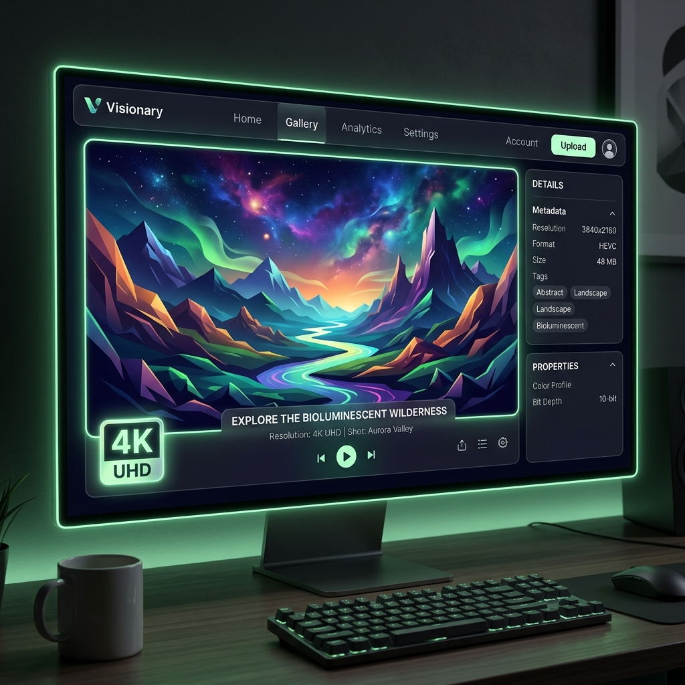
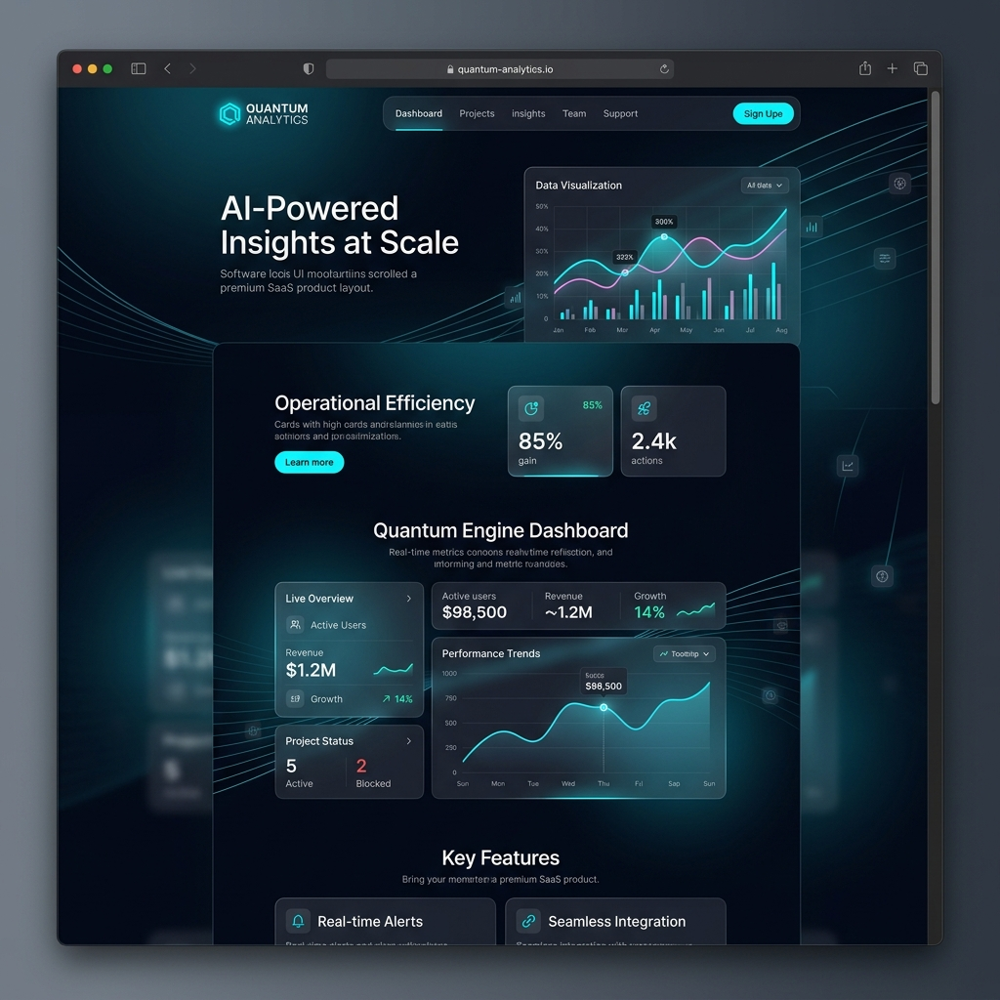
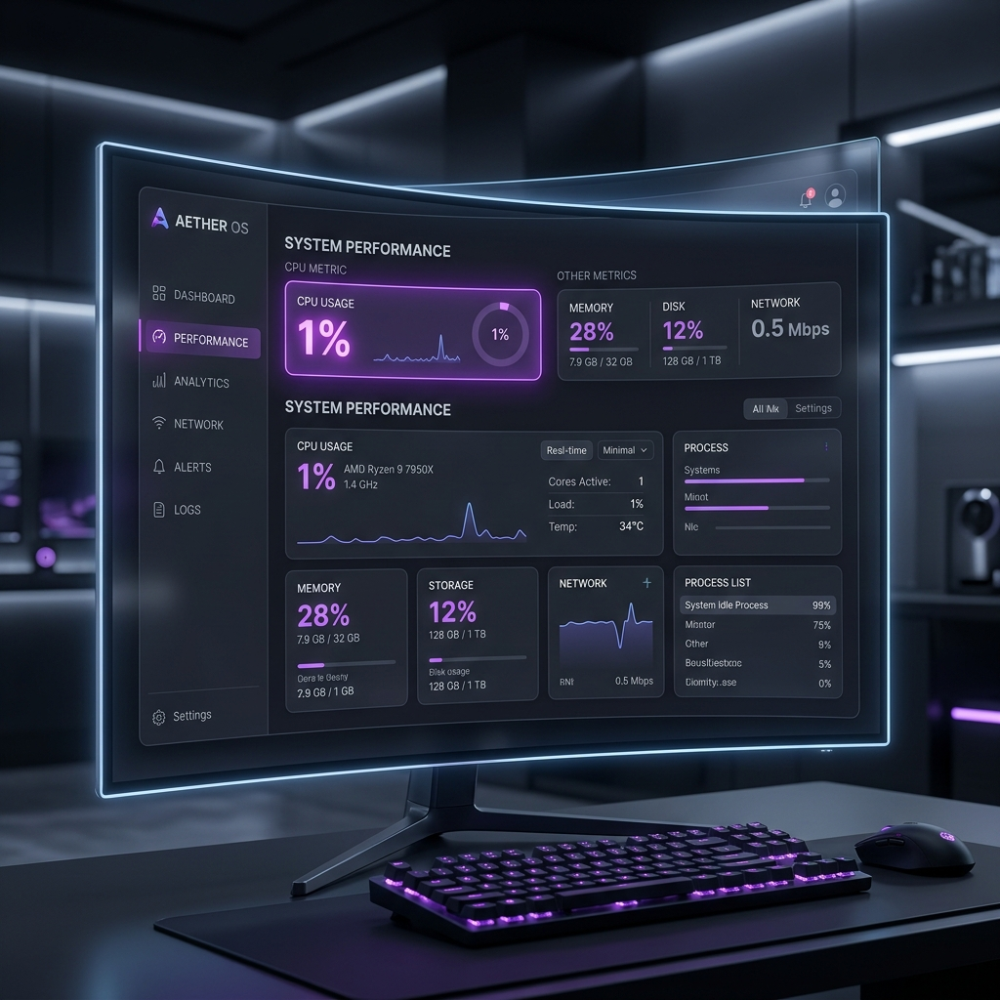

복잡한 설정 없이 직관적인 캡쳐 한 번으로 끝! 강력한 화면 반투명 고정(Pin) 기능과
가벼운 최적화로 실무자의 작업 효율을 200% 압도적으로 끌어올려 줍니다.
Windows 10/11 전용 (64-bit)
혁신적인 시각화 도구로 작업 속도를 비약적으로 높입니다.
픽셀 하나까지 선명하게 캡쳐합니다. 레티나 및 고해상도 모니터에서도 깨짐 없는 완벽한 원본 화질을 유지합니다. 프로페셔널한 프레임 스냅샷을 쉽게 얻으세요.

잘리는 화면 없이 긴 웹페이지나 문서도 한 번에! 스크롤을 자동으로 인식하여 완벽하게 하나로 이어 붙여줍니다. 끊임없는 정보 보존이 가능해집니다.

백그라운드에서 실행되어도 시스템 속도에 전혀 영향을 주지 않습니다. 단 1%의 메모리 공간만 사용하는 압도적 가벼움을 직접 체감해 보세요.

다운로드 후 복잡한 설정 없이 바로 사용 가능합니다.
STEP 01
다운로드 폴더에서 setup.exe를 실행하세요. 최신 버전의 안정적인 설치 환경을 제공합니다.
STEP 02
Windows 보호 알림 시 안내글 속의 '추가 정보' 문구를 클릭합니다.
STEP 03
우측 하단에 나타나는 '실행' 버튼을 클릭하여 설치를 완료합니다. 즉시 프로그램을 시작할 수 있습니다.
예곰 캡처는 100% 안전하게 자체 개발된 소프트웨어입니다. 최신 프로그램 특성상 V3 같은 백신이 인식하지 못해 보안 검사를 띄울 수 있습니다. 안심하시고 아래 단계를 진행해 주세요.
1단계 [검사 중지] 누르기
'앱 격리 검사 중' 창이 뜨면 [검사 중지]를 클릭하세요.
2단계 [파일 해시 예외 처리] 누르기
이후 나타나는 창에서 [파일 해시 예외 처리]를 클릭하시면 됩니다.